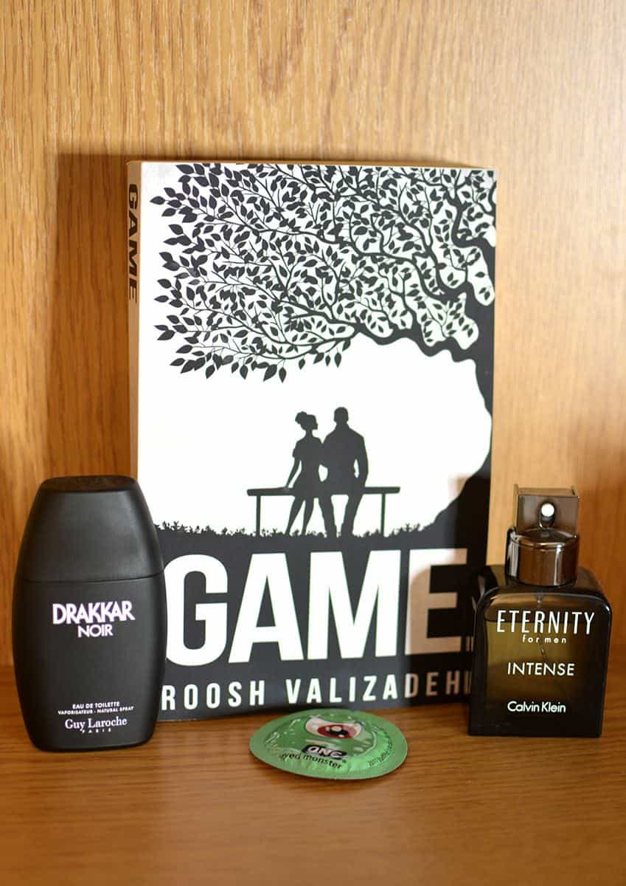

Daryush "Roosh" Valizadeh created ROK in October 2012. You can visit his blog at RooshV.com or follow him on Twitter and Facebook.


The following review of the Game audiobook, which I recorded in my own voice, was initially posted on Roosh V Forum. Click here for full book details.
I want to start this review by saying I’m impressed with the sheer length and volume of the material presented here. Roosh wasn’t kidding when he said this was going to contain a lot of information.
Roosh manages to present the data in this book in a very engaging, entertaining manner. [His] background as a scientist shows clear influence in the way this information is presented. I appreciated this, being more of a right-brained type of person, because it highlighted lots of subtle things I had subconsciously noticed but hadn’t connected the dots on until it was spelled out the way Roosh has done here. It is self-evident that he has spent thousands of hours into this research and experimentation, all of which lines up perfectly with my experiences with women in regards to what has worked and what hasn’t.
In this book, Roosh communicates a completely non-emotional, results-neutral take on the entire modern dating scene; an increasingly rare viewpoint on this subject matter in the context we have come to understand it. He describes, diagnoses, and prescribes helpful information for any man in the game no matter where they are at with it.
In addition, I have a greater appreciation of Roosh’s sense of humor after listening to this audiobook, as his dryness comes through even more here. There are passages where you can tell he is trying not to laugh. His imitation of a girl’s voice got many laughs from me while listening.
This book is truly a catch-all game resource. There isn’t a single aspect of seduction and long-term game that Roosh hasn’t explored here. There is advice for every man, at every level of game that is actionable and easy to implement.
In the chapter on ‘pre-game’ Roosh’s body hair grooming standards and techniques almost matched mine to a T , so I completely co-sign on his judgement of how a man should present himself. He correctly identifies modern women’s superficiality without focusing on it or giving it too much weight.
Roosh covers everything from inner game approaching, texting, escalating, closing, and relationship management, training your woman, the importance of holding to your standards as well as social circle game and ‘love tourism’.
Despite the fact that the material is conveyed in Roosh’s tried and true dry tone, it still flows nicely. It is engaging enough to not bore the listener even though the material is academic in nature. Roosh focuses on the subject matter without deviation, and not a single line in the book is filler.
Personally, I found the chapter on Internal Game to be the most profound. This chapter is so important! Regardless of your game goals, the information contained here is a must listen (or must read) for any man at any level of game or life.
In this chapter, Roosh emphasizes the importance of having a positive belief system, and goes about explaining how to program oneself with such a mindset by using autosuggestion and positive affirmations. It’s so easy to overlook the importance of a positive belief system and adopt a negative mindset, which Roosh points out here. He notes how common that is among men in the game which for me, was both comforting and eye-opening.
Roosh lists off 7 core beliefs to assist you in your efforts to program your mind to think like a player. However, the way he reads off the beliefs and explanations was confusing and I had to rewind and listen again to write them down. It would have been easier if he had numbered them, or listed them all of at once before going into specifics about them. [Note from Roosh: I did number them in the final edition of the audiobook.]

The segment on texting was great. So many guys get hung up on their text game (myself included) but I’m confident if you follow the texting guidelines he provides you’re likely to save yourself from wasting time on leads that will likely go nowhere.
My criticism of this part of the audiobook was that his voice sounded a bit rushed, cracked a few times and you can hear him breathing in and out more than in the other portions of the book which were much smoother. The part of the audiobook focusing on sex itself had me laughing a bit, because it is hilariously specific.
Overall, this is an up to date, well-informed book that anyone would benefit from reading, regardless of your level of experience in life or with women. I give it 9/10.
Game has been released on paperback, e-book, audiobook, and Kindle. Click here for full details.
Read Next: What Is Game?